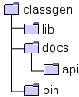

| toc | install | usage | language | examples | ref | api |
classgen comes in a binary or source distribution. Currently documentation is available for the binary distribution only.
You receive classgen as zip, tar or tar.gz file. It is named classgen-xxx-bin.yyy, where xxx is the version number and yyy depends on the archive type you chose. After unpacking the archive you have the following directory structure.
|  | classgen home, readme and copyright notice | |
| classgen, classgen-framework and CUP libraries | ||
| classgen documentation | ||
| classgen-framework api documentation (Java doc) | ||
| start-up scripts for win32 and unix/linux |
In order to use classgen you have to set a couple of environment variables.
After this steps classgen is installed properly and ready to use. Click here for usage documentation. Please enjoy using classgen.
Sorry! Not yet available.
© copyright 2000, 2001, 2002 Sebastian Winter (winterse@in.tum.de) and Florian Deissenboeck (flo@deissenboeck.de)
© copyright 2000, 2001, 2002 Technical University of Munich, Germany